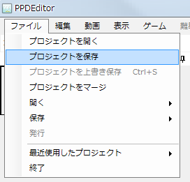

Primero, mida el BPM del vídeo (de su canción).
El BPM es el número de pulsos por minuto, es decir, la velocidad de la canción (cuanto mayor, más rápido es el tempo).
PPDEditor incluye una función para medir el BPM llamada Medición de BPM.
Si no consigue medirlo bien, pruebe a buscar "nombre de la canción BPM" en Google o similar.
También hay software gratuito de terceros, como "MixMeister BPM Analyzer", que analiza un archivo mp3 y calcula el BPM automáticamente.
Sin embargo, estos valores no siempre son fiables, así que compruebe al menos una vez midiéndolo a mano.
Ya ha medido el BPM.
Introdúzcalo en el cuadro de texto situado más a la izquierda de la caja de herramientas.
(Es el cuadro de texto que muestra la sugerencia BPM al pasar el ratón por encima)

A continuación, configure el recorte del vídeo.
El tamaño actual del vídeo aparece en la ventana de propiedades.

La ventana de PPD es 16:9 (800*450px).
Por eso no hace falta configurar el recorte para un vídeo 16:9,
pero para otros vídeos hay que configurarlo para mantener la relación de aspecto.
Por ejemplo, un caso habitual es un vídeo de 512*384px (relación 4:3) con franjas negras arriba y abajo.
En ese caso, sin las franjas negras el vídeo suele ser 16:9, así que configúrelo para quitarlas.
Primero, seleccione Vídeo → Recortar.

Aparece la siguiente ventana.

Calcule la altura de las franjas negras que hay que quitar.
Sea black_height la altura de una franja negra, movie_width el ancho del vídeo y movie_height su altura.
Entonces debe cumplirse la siguiente ecuación.
movie_width:movie_height-2*black_height=16:9
⇔16*(movie_height-2*black_height)=9*movie_width
⇔black_height=1/2(movie_height-9/16*movie_width)
...
Puede calcularlo con el siguiente formulario.
Introduzca la altura de la franja negra en Arriba y Abajo de la ventana de recorte y pulse OK.
El vídeo se recortará y se mostrará en 16:9.
Otro ejemplo: puede que quiera añadir franjas negras a izquierda y derecha de un vídeo de 512*384px (4:3) sin franjas para mantener la relación (4:3).
En ese caso, introduzca -100 en Izquierda y Derecha. (Arriba y Abajo a 0)
Muestre el escritor del archivo de configuración e introduzca la información.

Para el inicio y el fin de la miniatura y el tiempo de inicio y de fin, pulse el triángulo de la derecha y seleccione "Tomar de la línea de tiempo"
para introducir el tiempo actual del vídeo.
El inicio de la miniatura es cuando empieza la reproducción en el menú de PPD. El inicio del estribillo es una buena opción.
El fin de la miniatura es cuando termina la reproducción en el menú de PPD. El final del estribillo está bien.
El tiempo de inicio es cuando empieza el vídeo en el juego. Depende del vídeo, pero normalmente 0 está bien.
Si el vídeo empieza de golpe, puede retrasar su inicio con -1, -2, etc.
El tiempo de fin es cuando termina el vídeo en el juego. El final del vídeo está bien.
Cada dificultad puede indicarla como quiera; puede especificar lo que desee mostrar. Actualmente parece habitual ★×○ (○ es un número).
También puede decidirlo antes de distribuir.
En BPM, introduzca el BPM que ha medido.
En cada recorte del vídeo, introduzca los valores de recorte configurados antes. Si son 0, introduzca 0 en todos.
Ahora guarde el proyecto una vez.
Si creó el proyecto con Nuevo proyecto, el proyecto ya existe, así que pulse Ctrl+S o seleccione Archivo → Sobrescribir proyecto.
A continuación se explica cómo guardar si lo configuró sin usar Nuevo proyecto.
Seleccione Archivo → Guardar proyecto.

Aparece un diálogo. Guarde el archivo como "nombre de la canción.ppdproj".

A partir de la próxima vez, seleccione "Sobrescribir proyecto" para sobrescribirlo.
Para volver a abrir el proyecto, seleccione el archivo "nombre de la canción.ppdproj" guardado.
A continuación, coloque las marcas.
Siguiente